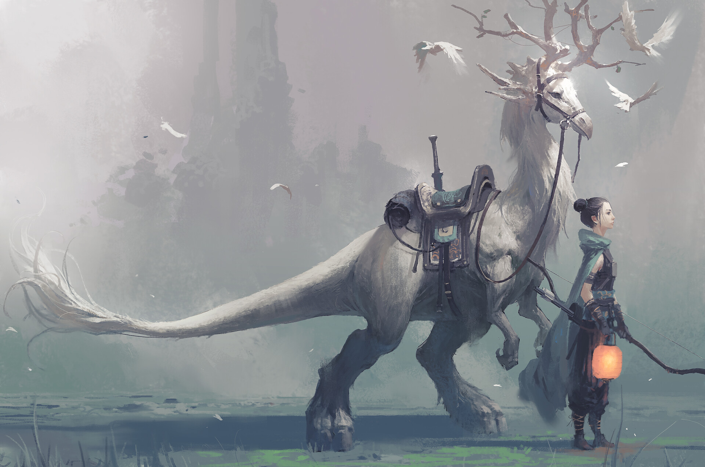
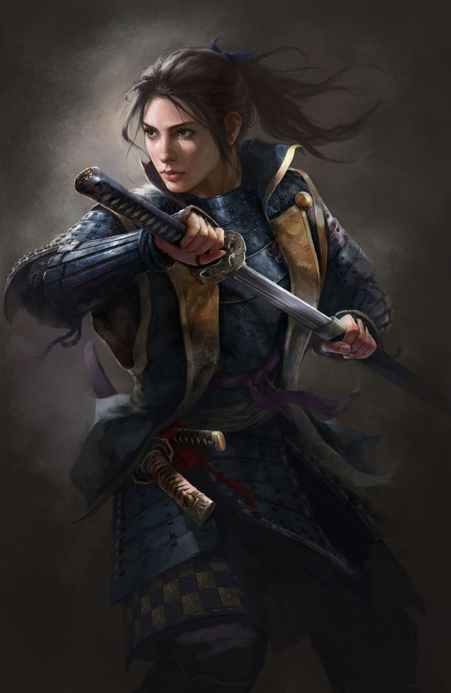

Force

Résistance
Dextérité
Magie
Ingénierie

Environnement : Nouveau-Monde - Guénazar / Archipel - île du Havre dansant - Athelney
Durée de vie moyenne : 75 ans
Taille : M
Système politique : Pseudo république / Démocratie dont l'acte se fait par une assemblée
Statut politique : - / Membre de la Ligue de Vésir
Relations hostiles : Elfes - Humains de l'Archipel / Aucune
Alliés : Nains / Ligue de Vésir
Croyance : Ysiiri / Myzias
Force
Résistance
Dextérité
Magie
Ingénierie
Capacités innées : Aucune
Facilités magiques : Aucune
Impossibilités : Aucune
Les humains firent leur première apparition dans les Tertres-du-Temps. Les guerres qu’ils y menèrent firent naître ; notamment via l'empereur noir, Baldorn ; le ressentiment et les passions tristes qui alimentèrent Ga’ar, sonnant par la même occasion son avènement. Finalement, les communions de prières dont ils eurent recours leur amena une prophétesse, maîtrisant la magie. Avec l’aide de leur nouvelle puissance, le plus faible des peuples atteignit ce qu’il nommera le Nouveau-Monde et y chercha fortune. Les elfes, repoussant leurs demandes d’asiles, ils se tournèrent vers les nains avec qui ils firent une coalition qui découla sur une guerre et le contrôle humain des terres du milieu.
Profil type : Inventif - Mélancolique - Egoïste - Rancunier
Alimentation : Omnivore - Cultures, élevage et chasse
Montures : Zébrules / ???
Aujourd’hui, les Hommes ne sont plus aussi fébriles qu’autrefois, ils ont des technologies diverses et des armements de choix pour se défendre, tout comme une maîtrise, incomplète mais usuelle, de la magie.
Malgré leurs quelques talents, les dissensus au sein de leur propre race; durant l'avant guerre humano-elfique; les a divisé en deux: ceux qui vivent sur l’Archipel et font partie de Ligue de Vésir, avec une technologie basée sur le bien-être de la population, et ceux de Guénazar, sur les côtes du Nouveau-Monde brisés par les castes et ce que nous pourrions qualifier de guerre civile.
Nombre d'OC de cette race sur Yndrill: -